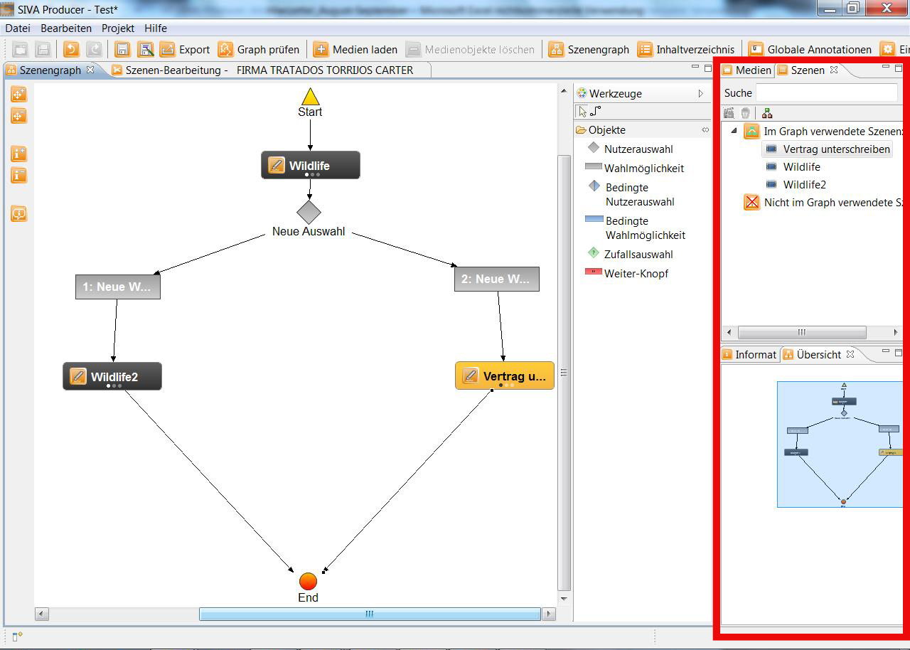

In the SIVA Producer there are different views at your disposal. They list and display different elements. Editors can be opened and
files can be loaded and deleted by using the views.

Views are:
The Scene-repository is also structured into various files. The main files are
"Scenes used in the graph" and "Scenes not used in the graph". If a scene has been used at least once in the scenegraph
then it will appear automatically in the "scenes used in the graph"-file:
The information-section has the form of a table. Depending on the element that is marked in
the indicating range different information with description and value will be shown:
The overview is an overview of the scenegraph: